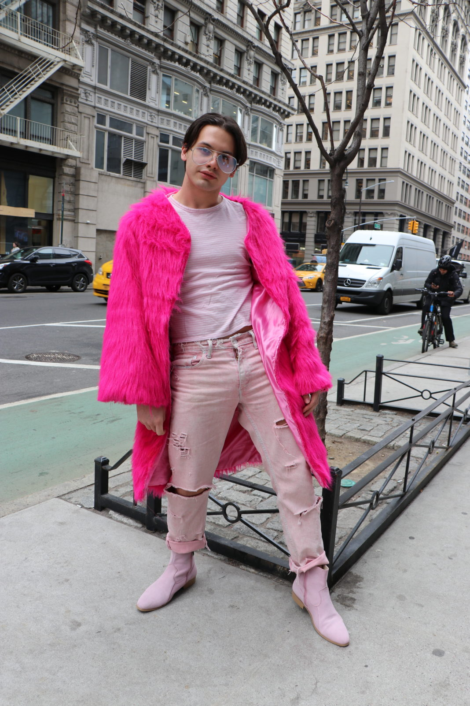

Fashion on 5th
Fashion on 5th is The New School Free Press’ fashion column showcasing the student’s best and most unique looks of the week.
Luke Lyons
A Lang student studying Global Studies, Luke Lyons sported a one-of-a-kind look on Fifth Avenue. “The jacket is from H&M unfortunately, but I decided to paint on the back of it since I was bored,” Lyons said. He paired it with Ralph Lauren washed jeans and socks from J-Crew. The futuristic sunglasses were bought from a street vendor in Union Square Park last November. “I lost them and then I found them two days ago,” Lyons said. The 7-inch heels, the statement piece of the whole outfit were purchased “from a random online store at 3am.” The shoes light up and can be programmed to send a message. “Honestly I didn’t look at the instructions,” they said.
Renata Soifer
Renata Soifer, a Fashion Design student at Parsons put together a 70s inspired outfit with a rust colored long coat and light-blue flare jeans. The coat, her only investment of the season, was purchased from Urban Outfitters. The jeans are from an Australian brand called Rolla’s, the only store she gets her jeans from now, she said. “I’m like obsessed with the 70s. A little bit. A lot.” Soifer carried two bags, a red Parsons tote and one from Saturday’s New York City, a brand she calls “very surf-oriented.” Soifer accessorized the look with a necklace she shares with her best friend. “It’s like a little saint. I’m not religious at all but it’s supposed to take care of you when you travel,” she said. Soifer is from Argentina. “As I travel a lot from home I always carry it.”
Kaylo Lima

Kaylo Lima is a first-year student studying Journalism + Design at Lang and Fashion Studies at Parsons. Lima wore a vibrant Hawaiian shirt he purchased from Beacon’s Closet. Lima paired the shirt with Wrangler pants and pulled it all together with a beige-colored trench coat from L-Train Vintage. “My style right now is very 70s Western-inspired, but it can also be very Matrix. I’m a mix of both,” Lima said. He put on black Gucci loafers to match the black Prada bag, and wore Vogue by Gigi Hadid sunglasses. The necklace, which he hasn’t taken off since it was gifted on his 13th birthday, has his name carved on the front.” Lima also had on four rings. “It’s two snakes because I’m a gemini,” said Lima. His other ring is his mom’s old engagement ring.
Alicia Assaad
Studying Integrative Design at Parsons, Alicia Assaad is seen wearing a cream puffy coat from Tiger Mist paired with a baby blue skirt from Dolls Kill. She borrowed her Brandy Melville top from a friend. Assaad finished her look with Uniqlo socks, Nasty Gal shoes, and a bag from Chinatown Market. When asked if she purposely made her skirt match her baby blue nails, she said, “This just happened.”
KC Amable
KC Amable is a junior studying Communications Design at Parsons. Her shoes are from Maison Margiela and she got her mustard yellow pants from a flea market in Beacon, NY. Her shirt is J.W. Anderson. She completed her look with a cream coat and a slim belt that she got at a thrift shop. Amable’s overall choice of clothing matches an overall theme of neutral colors: black, white, and cream. “Maybe that’s part of my major. I want to be an art director, so I like color theory,” she said.
Rene Gutierrez
Rene Gutierrez is a Fashion Design student at Parsons. He caught the attention of many as he walked around campus with a bright pink coat that he made himself. “My essence is always ‘tight and bright’,” he said. Gutierrez paired his coat with Levis’ jeans, an American Eagle soft pink striped shirt, and boots from Foundation Footwear. When asked if he changes colors every few days, he said, “Pink is my favorite color, but I definitely mix things up. But I really love tight and very vibrant clothes.”
Photos by Manami Kaneko. Illustration by Olivia Heller.